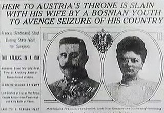
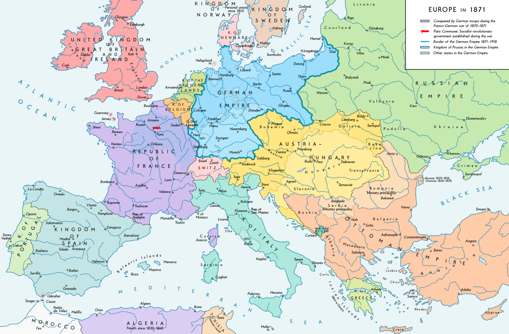
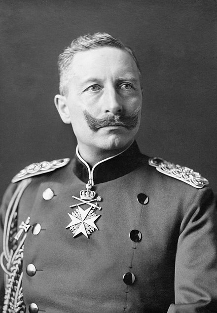
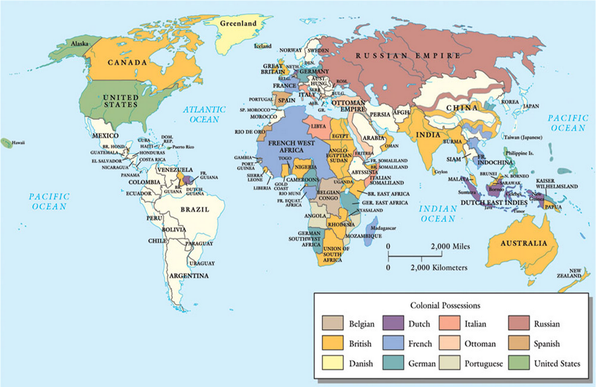
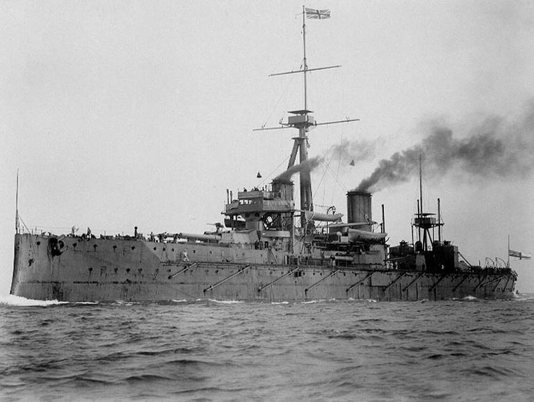
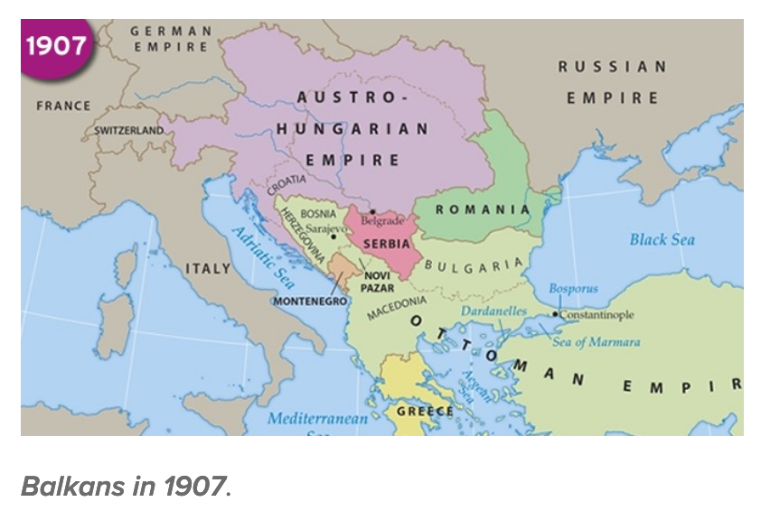
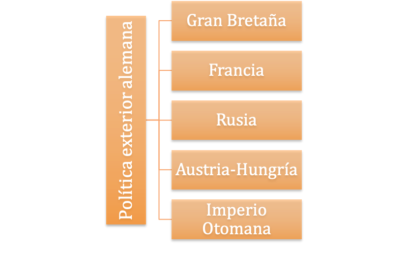
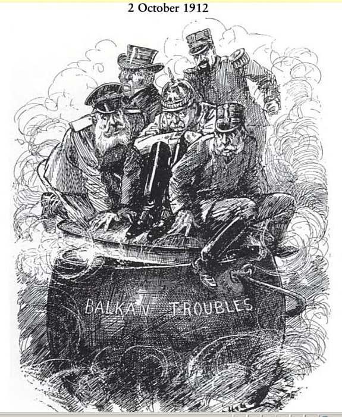
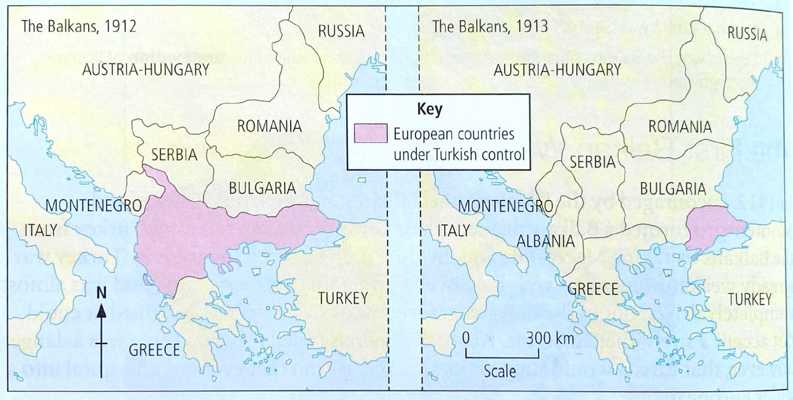

IB Docs (2) Team
IB Docs (2) Team

1. Primera Guerra Munial: Causas

La Primera Guerra Mundial comenzó en los Balcanes en julio de 1914 y terminó en noviembre de 1918. En ella participaron más de 100 países y provocó 17 millones de muertos y 20 millones de heridos. Desde 1918, los historiadores han discutido acerca de las causas de esta catástrofe. Esta sección cubre los acontecimientos de largo, corto e inmediato plazo que llevaron a las grandes potencias de Europa, sus imperios y sus aliados a un conflicto armado.
Preguntas orientadoras
¿Qué importancia tuvieron los factores a largo plazo en el origen de la Primera Guerra Mundial?
Cuánto contribuyeron las crisis ocurridas entre los años 1905 y 1912 en la tensión creada?
Las guerras de los Balcanes 1912 - 1913
¿Qué otros acontecimientos ocurridos entre 1900 y 1913 contribuyeron a la tensión?
¿Qué tan significativa fue la crisis de julio de 1914?
¿Cuán importantes fueron los factores económicos, ideológicos y territoriales en el origen de la Primera Guerra Mundial?
¿Cuán importantes fueron las causas políticas para el origen de la Primera Guerra Mundial?
¿Cuál es la opinión de los historiadores sobre las causas de la Primera Guerra Mundial?
1. ¿Qué importancia tuvieron los factores a largo plazo en el origen de la Primera Guerra Mundial?
El sistema de alianzas antes de 1900

Comenzamos nuestro estudio de las causas a largo plazo de la Primera Guerra Mundial evaluando el impacto de la Guerra Franco-Prusiana de 1871. Esta fue la última guerra de la unificación alemana, liderada por el canciller prusiano Otto von Bismarck. La guerra con Francia entre 1870 y 1871 condujo al establecimiento de un fuerte y poderoso imperio alemán en Europa central.
Causó tensiones en Europa por varias razones:
- La unificación se logró a través de "sangre y hierro", en otras palabras, a través de guerras exitosas contra otros estados europeos [Dinamarca, Austria-Hungría y Francia].
- Desencadenó una carrera armamentista en Europa continental porque las demás potencias se dieron cuenta de que tenían que mejorar la formación y el equipamiento de sus ejércitos y mejorar la infraestructura para desplazar ejércitos masivos a las primeras líneas de combate en una guerra.
- Desestabilizó el "equilibrio de poder" en Europa, ya que instituyó un nuevo poder económico y militar en su centro.
- Esto condujo a la inseguridad y a la búsqueda de alianzas entre las naciones.
- Condujo al establecimiento del movimiento “revanchista” en Francia. La agenda de este movimiento político se enfocaba en la venganza contra Alemania y la recuperación de Alsacia y Lorena que habían sido cedidas a Alemania al final de la guerra.
Primera tarea
ATL: Habilidades de investigación y comunicación
Antes de avanzar en el estudio, es importante comprender la naturaleza y las características de las diferentes potencias europeas en 1871.
La clase se divide en grupos. Cada grupo investigará un país y preparará una presentación al resto de la clase sobre los siguientes temas:
- Capacidad económica
- Política exterior
- Objetivos/temores principales
- Fortalezas/debilidades principales
- Sistema político
- Problemas socioeconómicos
Los países son: Francia, Alemania, Gran Bretaña, Rusia, Austria-Hungría, Turquía.
Mientras cada grupo hace su presentación, el resto de la clase debe tomar notas. Tal vez quieran completar un cuadro como el que se adjunta a continuación como una tarea de seguimiento.
A pesar de la tensión causada por la guerra franco-prusiana, la Alemania del káiser Guillermo I y su canciller, Bismarck no continuó con una política exterior agresiva. En cambio, Bismarck trabajó en la creación de una red de alianzas que protegiera a Alemania de futuros ataques y le permitiera consolidar su posición en Europa. El objetivo principal de Alemania era mantener a Francia aislada y permanecer aliada con Rusia para evitar una guerra en sus dos frentes.
Tarea dos
ATL: Habilidades de investigación
Copia y completa una tabla como la que se muestra a continuación para mostrar los participantes, las cláusulas, los objetivos y el éxito/fracaso de cada una de las siguientes alianzas establecidas por Bismarck:
 Alinzas euopeas entre 1879 y 1887
Alinzas euopeas entre 1879 y 1887
El impacto del "nuevo curso y la Weltpolitik”

En 1888, el joven y ambicioso Guillermo II llegó al trono en Alemania, y Bismarck fue reemplazado como canciller por Leo von Caprivi en 1890. El Káiser Guillermo II y Caprivi llevaron la política exterior alemana por un "nuevo rumbo", también conocido como "Weltpolitik", que derribaría el sistema de alianzas de Bismarck. El Tratado de Reaseguro con Rusia se dejó caducar ese año creando las condiciones para la alianza franco-rusa de 1894 que destruyó el objetivo de Bismarck de asegurar que Alemania no se enfrentara a una guerra en dos frentes.
Los políticos alemanes también comenzaron a mirar más allá de Europa y a seguir una política que esperaban que convirtiera a Alemania en una potencia colonial, con un imperio y una marina de ultramar. Tal política también tendría el beneficio de distraer a las poblaciones alemanas de los problemas sociales y políticos en casa. Esta política, conocida como Weltpolitik, fue apoyada por varios grupos patrióticos, como la Liga Pan-Alemana. Una política de este tipo debía tener un impacto en las relaciones de Alemania con otros países (véase más abajo).
Rivalidades imperiales

Actividad de inicio
En 1914, ¿qué potencias europeas tenían los mayores imperios?
¿Dónde tenía Alemania posesiones coloniales? ¿Qué tan importante era su imperio comparado con los de otras potencias europeas?
¿Por qué la existencia de imperios coloniales por parte de las potencias europeas sería una fuente potencial de conflicto?
Una de las principales causas de tensión entre las potencias europeas después de 1880 fue la rivalidad colonial. A lo largo del siglo XIX, los europeos habían aumentado su dominio sobre los países de África y el Lejano Oriente y competían por construir vastos imperios. Estas empresas fueron impulsadas inicialmente por motivos económicos, pero a lo largo del siglo la adquisición de territorios se produjo cada vez más debido a una mezcla de la creencia social darwiniana de que la expansión de la civilización occidental era "obra de Dios" y también de la competencia nacionalista con las demás potencias europeas.
El deseo de Alemania de hacer sentir su influencia fuera de Europa implicaba entrar en conflicto con las potencias coloniales más establecidas, en particular con Gran Bretaña. Un ejemplo de este efecto se produjo en 1896, cuando el Kaiser alemán causó gran ofensa en Gran Bretaña por su respuesta a la llamada "incursión Jameson" de diciembre de 1895. Se trató de un intento fallido de Gran Bretaña de incitar a un levantamiento contra la República Bóer del Transvaal en el sur de África. Tras el fracaso de esta incursión, Alemania envió un telegrama al líder bóer felicitándole por resistir el ataque y "restaurar la paz... frente a las bandas armadas que han irrumpido en su país como perturbadores de la paz y por haber sido capaces de preservar la independencia de su país contra los ataques del exterior".
El telegrama causó indignación pública en Gran Bretaña.
La Carrera Naval

Tarea Uno
ATL: habilidades de pensamiento
Mira este video (1914 - 1918 A BBC History of the Great War, Episodio 1) del minuto 5 al minuto 13
- ¿Qué imagen se crea aquí del personaje de Guillermo II?
- ¿Cuál era el estilo de gobierno de Guillermo II?
- ¿Cuáles eran sus objetivos y por qué era probable que estos causaran tensiones en Europa?
- ¿Por qué Guillermo II fue apoyado por muchos alemanes?
- ¿Cuál fue el impacto diplomático de la construcción de una nueva marina?
Como muestra el video, la política alemana de Weltpolitik promovió conflicto con Gran Bretaña, que respondió a la amenaza de su supremacía naval abandonando su política de "espléndido aislamiento". En 1902 hizo una alianza con Japón consiguiendo, de esta manera un aliado en el Lejano Oriente que le permitió regresar los buques de guerra de esta zona. Esta alianza fue seguida por un acuerdo con Francia. Aunque esta entente no era una alianza formal, resolvió la rivalidad entre las dos naciones sobre cuestiones coloniales, y estableció una nueva dirección para las relaciones anglo-francesas.
En 1907, Gran Bretaña y Rusia llegaron a un acuerdo sobre su relación con Persia, el Tíbet y Afganistán, lo que redujo aún más la preocupación británica por la seguridad en la India y el Lejano Oriente. Francia ya había asegurado a Rusia como aliada tras el fracaso de Alemania en la renovación del Tratado de Reaseguro de 1887. Ahora Rusia, Francia y Gran Bretaña se unieron en la Triple Entente. La expansión naval alemana había obligado así a Gran Bretaña a buscar entendimientos con sus antiguos rivales coloniales, dejando a Alemania preocupada por el hecho de que estaba siendo "rodeando".
El otro impacto de las acciones del Káiser en la creación de una marina fue que comenzó una carrera armamentística naval. Dos leyes navales de 1898 y 1900 sentaron las bases para una poderosa flota de batalla alemana. Gran Bretaña respondió lanzando un superbuque, el Dreadnought en 1906 y ordenando en 1909 la construcción de ocho barcos de batalla más. La carrera naval también influyó en las actitudes británicas. El público británico comenzó a ver a Alemania como el nuevo enemigo que amenazaba a Gran Bretaña.
Tarea dos
ATL: Habilidades de pensamiento
- Según el historiador Gordon Craig, ¿cuál era el objetivo del Kaiser al crear una poderosa armada?
- ¿Por qué este plan resultó ser totalmente descabellado?
El nuevo programa naval estaba, en resumen, desde su inicio dirigido contra Gran Bretaña... la teoría del riesgo... preveía una flota alemana estacionada en aguas nacionales que era tan fuerte que en caso de guerra con Gran Bretaña podría tomar medidas ofensivas contra la flota nacional británica... A medida que la marina alemana creciera, los británicos se inclinarían por evitar el conflicto con Alemania o... buscar un acuerdo con ella en términos que fortalecieran la posición continental de Alemania...".
Craig, Alemania, 1866-1945 (1981)
2. ¿Cuánto contribuyeron las crisis ocurridas entre los años 1905 y 1912 en la tensión creada?
Entre los años 1905 y 1913 se produjeron varias crisis que, aunque no condujeron a la guerra, aumentaron la tensión entre los dos bloques de la alianza en Europa y también crearon una mayor inestabilidad en los Balcanes.
1. La crisis de Marruecos (1905)
Alemania estaba preocupada por la nueva relación entre Gran Bretaña y Francia y se propuso exponer la debilidad de esta nueva amistad y romper la entente atacando a Francia en Marruecos. Como parte del acuerdo de la entente, Gran Bretaña había apoyado una toma de posesión francesa de Marruecos a cambio de que Francia reconociera la posición de Gran Bretaña en Egipto. Los alemanes anunciaron que ayudarían al sultán de Marruecos a mantener su independencia y exigieron una conferencia internacional para discutir la situación.
Sin embargo, cuando los franceses finalmente accedieron a la Conferencia de Algeciras, los británicos siguieron apoyando las demandas francesas de influencia en Marruecos. De hecho, las relaciones entre Gran Bretaña y Francia se estrecharon a medida que los británicos se preocupaban por las tácticas de intimidación de Alemania y su continuo desarrollo naval. Además, en 1907, Gran Bretaña llegó a un entendimiento histórico con su gran rival por la influencia asiática, Rusia. Así pues, para 1907, se había creado una Triple Entente, en gran parte como resultado de la estrategia naval de Tirpitz.
Tarea Uno
ATL: Habilidades de pensamiento
¿Cuál, según la fuente a continuación, era la importancia de la Triple Entente?
Usando la fuente y su propio conocimiento, discutan de a dos si, como sostenía Alemania, para 1907 estaba rodeada de enemigos hostiles.
La Triple Entente no era un sistema de alianza formal, pero marcó un cambio en el equilibrio de poder en Europa. Los alemanes ya no podían asumir que estallaría una guerra anglo-rusa, lo que les permitiría obligar a Gran Bretaña - o a Rusia - a convertirse en un aliado subordinado. Las ententes no eliminaron completamente todas las fricciones entre sus miembros. Las fricciones anglo-rusas continuaron, por ejemplo, en Persia. Tampoco significaban necesariamente que Alemania fuera a ser aislada y rodeada. Había voces influyentes en Francia que abogaban por un acuerdo con Alemania. Sin embargo, fue la política agresiva y frecuentemente torpe de Alemania, que se manifestó por primera vez en 1905-6 y luego se repitió en las crisis de Bosnia y de Marruecos, la que convertiría la Triple Entente en un realineamiento anti alemán.
Cooper, Laver y Williamson, Historia Europea, 1815 - 1914, Hodder, 2007
2. La crisis de Bosnia, 1907

El temor de Alemania a ser rodeada por la Triple Entente obligó al Káiser a fortalecer aún más su relación con su socio de la Triple Alianza, Austria-Hungría. Esto sería clave en términos de su impacto tanto en la crisis bosnia de 1908 como en la posterior crisis balcánica de 1914.
En 1908, una crisis interna del Imperio Otomano causada por la Revolución de los Jóvenes Turcos volvió a plantear la cuestión oriental. Austria-Hungría decidió actuar anexando las dos provincias de Bosnia y Herzegovina que había ocupado desde 1878, pero que seguían siendo formalmente turcas (véase la página anterior )
Esta anexión causó indignación en Serbia, que había previsto que estas provincias formaran parte en última instancia de un gran estado eslavo de Europa sudoriental. Demasiado débiles para oponerse solos a Austria, los serbios buscaron el apoyo de sus compañeros eslavos rusos. Sin embargo, Rusia aún no se había recuperado totalmente de la humillante derrota a manos de los japoneses en la guerra de 1904-1905 y no podía prestar asistencia. En esas circunstancias, Alemania apoyó firmemente a Austria y, dado el abrumador potencial militar de esos dos países, Serbia se echó atrás.
Los resultados de la crisis fueron importantes para aumentar la tensión en la región y entre los bloques de la alianza:
- Rusia había sufrido otra humillación internacional y comenzó un programa de rearme masivo
- El sentimiento nacionalista creció en Serbia
- La alianza entre Alemania y Austria-Hungría parecía más fuerte que los compromisos de la Triple Entente
- La era de la cooperación entre Rusia y Austria-Hungría en los Balcanes había terminado.
3. La segunda crisis marroquí
Tarea Uno
Habilidades de pensamiento
¿Cuál es el mensaje de la caricatura de Punch de 1911 ?
Caption: SÓLIDO
Alemania: “Caramba! Es una roca. Pensé que sería papel.”
En mayo de 1911 y a petición del sultán, Francia envió tropas a Fez, Marruecos, para suprimir una revuelta que había estallado. Los alemanes vieron en ello el comienzo de una toma de posesión francesa de Marruecos y enviaron una cañonera alemana, la Pantera, a Agadir, un pequeño puerto de la costa atlántica de Marruecos, con la esperanza de presionar a los franceses para que les dieran alguna compensación (el Congo francés) por tal acción.
Es significativo que no fue la reacción de Francia sino la de Gran Bretaña la que creó una crisis internacional. Preocupado por el uso de la "diplomacia de las cañoneras" por parte de Alemania y temiendo que Alemania estuviera planeando establecer una base naval en Agadir que amenazara sus rutas hacia Gibraltar, el gobierno británico pidió repetidamente a Alemania que dejara claras sus intenciones. El silencio de Alemania sobre el asunto obligó al canciller británico, David Lloyd George, a pronunciar un discurso con una clara advertencia para Alemania. Dijo que no se quedaría de brazos cruzados mientras los "intereses de Gran Bretaña se vieran afectados".
Alemania y Gran Bretaña parecían estar al borde de la guerra. Sin embrago, cuando tanto Austria como Italia se negaron a apoyar a su socio de alianza, Alemania se echó atrás aceptando como compensación dos franjas de territorio en el Congo Francés.
Los resultados de esta crisis volvieron a aumentar la tensión entre las potencias europeas:
- La opinión pública alemana era hostil a la colonización y crítica con el manejo de la crisis por parte de su gobierno.
- La relación entre Gran Bretaña y Francia se fortaleció.
- Hubo un aumento de la tensión y la hostilidad entre Alemania y Gran Bretaña.
Tarea dos
ATL: Habilidades de pensamiento
Lee la fuente que figura a continuación del historiador Imanuel Geiss y añada sus consideraciones sobre el impacto de la segunda crisis marroquí a la lista anterior.
El efecto neto de los esfuerzos alemanes fue consolidar la Triple Entente, y levantar un nuevo espíritu de desafío nacional en Francia. Sir Edward Grey, el Secretario de Relaciones Exteriores británico, y Paul Cambon, el Embajador de Francia en Londres, intercambiaron sus famosas cartas en las que prometían coordinar la política exterior de sus países en nuevos períodos de crisis, mientras que se establecían disposiciones para la cooperación naval y militar entre Gran Bretaña y Francia en caso de que Alemania atacara a Francia. El efecto de la derrota diplomática alemana en la segunda crisis de Marruecos fue aún más dramático en Alemania: La propaganda alemana, a partir de ahora, proclamó a viva voz que el Reich estaba "rodeado" por las potencias de la Entente, por una coalición de potencias envidiosas y malévolas, que sólo esperaban su oportunidad para aplastar a las potencias centrales".
Imanuael Geiss, Julio de 1914 (1965)
Tarea tres
ATL: Habilidades de pensamiento y autogestión
Usando el material anterior, y tu propia investigación, copia y añade evidencia al cuadro que se muestra a continuación (puedes crear tu propia infografía) para mostrar el impacto de la política exterior alemana en Gran Bretaña, Francia, Rusia, Austria-Hungría y el Imperio Otomano hasta 1912.

3. Las guerras de los Balcanes 1912 - 1913

Actividad de inicio
1. ¿Cuál es el mensaje de esta caricatura de 1912?
(Asegúrate de que puedes identificar todos los personajes de la caricatura. El caldero dice “Problemas balcanicos')
2. Repasa las razones por las que los Balcanes eran una zona tan volátil en Europa y por las que cada una de las potencias mostradas en la caricatura tenía interés en lo que sucedía en la región.
En 1912, alentados por Rusia, los estados balcánicos de Serbia, Grecia y Montenegro formaron una Alianza Balcánica con el objetivo de forzar a Turquía a salir de los Balcanes, tomando Macedonia y dividiéndola entre ellos. Turquía ya estaba debilitada por una guerra con Italia el año anterior y fue rápidamente expulsada de los Balcanes en sólo siete semanas.
Como el resultado significaba una Serbia fortalecida, Austria estaba decidida a no aceptar el resultado y existía el peligro de que, si Rusia apoyaba a su aliado serbio, los acontecimientos pudieran desembocar en una guerra europea. Sir Edward Grey convocó a una conferencia de paz en Londres. Como resultado de esta conferencia las antiguas tierras turcas se dividieron entre los estados balcánicos. Austria consiguió que en la conferencia se acordara la creación de Albania que se situó entre Serbia y el mar Adriático. Esto causó mayor tensión entre Austria-Hungría y Serbia.
Debido desacuerdo s territoriales tras la Primera Guerra de los Balcanes, otra guerra estalló en los Balcanes en julio de 1913. Bulgaria entró en guerra por el territorio que Serbia había ocupado. Los búlgaros consideraban que había demasiada población búlgara viviendo en zonas cedidas a Serbia y Grecia, a saber, Macedonia y Salónica.
Los serbios, los griegos y Turquía (que se habían unido en un intento de recuperar el territorio perdido) derrotaron a Bulgaria. En el Tratado de Bucarest, firmado en agosto de 1913, Bulgaria perdió ante Grecia y Serbia casi todas las tierras que había ganado en la primera guerra.
Primera tarea
Habilidades de pensamiento
Estudia el mapa que muestra el impacto de la Segunda Guerra de los Balcanes.
Cuál habría sido la posición/actitud de cada uno de los siguientes países después de esta segunda guerra de los Balcanes:
- Austria-Hungría
- Serbia
- Bulgaria
- Turquía (Imperio Otomano)

Como se ve en el mapa, Serbia duplicó su tamaño como resultado de las dos guerras y esto alentó su sentimiento nacionalista. Serbia también había demostrado su valía militar y tenía un ejército de 200.000 hombres. Esto significaba que Austria estaba ahora incluso más decidida a sofocar a Serbia. Rusia, mientras tanto, se animaba a permanecer al lado de Serbia mientras Alemania se animaba a respaldar a Austria y Hungría.
Tarea Dos
ATL: Habilidades de autogestión
1. Dibuja una línea de tiempo en una hoja de papel A3 o utiliza una aplicación de creación de líneas de tiempo en tu dispositivo. Incluye las siguientes fechas clave en su línea de tiempo.
2. Utilizando la información anterior, explica brevemente cómo cada uno de estos eventos causó tensión entre los estados europeos haciendo que la guerra fuera más probable a largo plazo.
3. ¿Qué factores impidieron que estallara una guerra europea en cada una de las "crisis" discutidas en esta página?
Acontecimientos a largo plazo que condujeron a la Primera Guerra Mundial
1871 Unificación de Alemania
1882 Triple Alianza
1887 Alemania implementa la "Weltpolitik".
1894 Alianza franco-rusa
1898 Leyes navales alemanas
1902 Alianza Anglo-Japonesa 1902
1904 Entente Cordiale 1904
1904-5 Derrota rusa en la guerra ruso-japonesa
1905 Primera crisis de Marruecos
1906 Se construye el acorazado Dreadnought británico
1907 Triple Entente
1908 Crisis de Bosnia
1911 Segunda crisis de Marruecos
1912 Primera guerra de los Balcanes
1913 Segunda guerra de los Balcanes
4. ¿Qué otros acontecimientos ocurridos entre 1900 y 1913 contribuyeron a la tensión?
Además de las crisis internacionales, en los países europeos se produjeron otros acontecimientos que contribuirían a las causas que condujeron, a largo plazo, a la Primera Guerra Mundial. Estos acontecimientos fueron alimentados y alentados por los eventos que se han mencionado anteriormente.
Nacionalismo
La literatura y la prensa retrataron la guerra como heroica, lo cual alentó el crecimiento del nacionalismo. La prensa popular y los grupos de derecha, como la Liga Pan Alemana, exageraron los incidentes internacionales para incitar a la opinión pública.
Primera tarea
ATL: Habilidades de pensamiento, investigación y comunicación
Dividan la clase en grupos. Cada grupo debe investigar la promoción de la guerra y el nacionalismo en los años anteriores a 1914 en la cultura popular, y tratar de encontrar material de al menos dos países pertenecientes a los bloques de alianza opuestos. Los grupos podrían entonces compartir sus hallazgos con el resto de la clase.
- la prensa
- literatura
- el arte y la música
- educación
La carrera armamentista y el militarismo
La carrera naval discutida anteriormente era parte de una carrera armamentista más general. Entre 1870 y 1914, el gasto militar de las potencias europeas aumentó en un 300%. El aumento de la población europea hizo posible la existencia de grandes ejércitos permanentes y el reclutamiento se introdujo en todos los países continentales después de 1871. Además, hubo un aumento masivo de armamentos. Aunque hubo algún intento de detener la acumulación de armamento - por ejemplo, en las conferencias de La Haya de 1899 y 1907 - no se acordaron límites a la producción de armas.
Además, todos los países de Europa tenían planes detallados sobre qué hacer si estallaba una guerra. El más famoso de ellos era el Plan Schlieffen de Alemania, pero otros países también tenían planes, como el Plan 17 de Francia.
El problema de estos planes era que reducían la flexibilidad de la respuesta de las grandes potencias a las crisis. Este fue particularmente el caso del Plan Schlieffen que se basaba en que Alemania librara una guerra de dos frentes.
Tarea Uno
ATL: Habilidades de pensamiento
Lea sobre el Plan Schlieffen en este articulo
- ¿Cuáles fueron las suposiciones hechas en la elaboración de este plan?
- ¿Cómo se suponía que funcionaría?
- ¿Por qué falló?
Tarea dos
ATL: Habilidades de pensamiento
Revisa los eventos de tu línea de tiempo arriba y encuentra evidencia que apoye el papel de cada uno de los siguientes en la creación de tensiones a largo plazo en Europa:
- el sistema de alianzas
- el declive del Imperio Otomano
- la política exterior alemana
- la carrera de armamentos
- crisis diplomáticas
- nacionalism
5. ¿Qué tan significativa fue la crisis de julio de 1914?
El historiador John Keegan argumenta que la Primera Guerra Mundial no era inevitable en el verano de 1914, y que estalló debido a la incapacidad de los estadistas para manejar la crisis que se desarrolló en julio. Keegan sostiene que, aunque ninguna de las grandes potencias quería una guerra general europea en 1914, no se comunicaron de manera efectiva entre sí durante la crisis.
Tarea Uno
ATL: Habilidades de pensamiento
Mira el siguiente video (La Gran Guerra 1914 - 1918 Episodio 1) a partir del minuto 33.
- ¿Por qué fue asesinado el archiduque Francisco Fernando y por quién?
- ¿Cuál fue la reacción de los austriacos?
- ¿Por qué Alemania emitió el "Cheque en Blanco"?
- ¿Cuál fue el impacto de esta acción?
- ¿Cuál fue el impacto potencial del sistema de la Alianza Europea?
- ¿Qué era esencial acerca de la cuestión del "honor" que plantea el historiador Jay Winter?
- ¿Cuáles fueron los acontecimientos centrales que empujaron a las potencias hacia la guerra durante este mes de julio?
Tarea dos
ATL: Habilidades de autogestión
- Completa la siguiente línea de tiempo para mostrar los eventos de la Crisis de Julio - quién hizo qué y en qué fecha
- ¿Cómo contribuyó cada uno de los eventos de tu línea de tiempo al estallido de la guerra? ¿Algún país parece más responsable de la crisis de julio que otros?
 La cuenta regresiva hacia la guerra
La cuenta regresiva hacia la guerra
Tarea tres
ATL: Habilidades de pensamiento
Lee las fuentes a continuación y responde a las preguntas que siguen:
Fuente A
Telegrama de Bethmann-Hollweg al Ministro de Relaciones Exteriores de Austria, Berchtold, el 30 de julio de 1914
La negativa [a participar en una conferencia con los rusos] ... sería un grave error, ya que provoca a Rusia precisamente a la interferencia armada, que Austria está principalmente interesada en evitar. Estamos dispuestos, sin duda, a cumplir nuestras obligaciones de aliado, pero debemos negarnos a dejarnos arrastrar por Viena a una conflagración mundial con frivolidad y haciendo caso omiso de nuestros consejos.
- ¿Cuál era, según la fuente A, la posición de Alemania respecto a una guerra general el 30 de julio de 1914?
- Alemania había dado a Austria-Hungría un “cheque en blanco” el 5 de julio y el 28 de julio Austria-Hungría le declaró la guerra a Serbia. Discutan de a dos cuál pudo haber sido la intención de Bethmann-Hollweg al enviar este telegrama.
- Con referencia al origen, propósito y contenido, analiza el valor y la limitación de la Fuente A para los historiadores que estudian las causas a corto plazo de la Primera Guerra Mundial.
Fuente B
Dra. Heather Jones, Profesora de Historia Internacional de la Escuela de Economía de Londres, citada en la revista online de la BBC News, 2014.
Un puñado de agresivos políticos y militares en Austria-Hungría, Alemania y Rusia causaron la Primera Guerra Mundial. Relativamente frecuentes antes de 1914, los asesinatos de miembros de la realeza no solían dar lugar a una guerra. Pero los líderes militares de Austria-Hungría - principales culpables del conflicto - vieron en el asesinato en Sarajevo del archiduque austro-húngaro Francisco Fernando y su esposa por un serbio bosnio una excusa para conquistar y destruir Serbia, un vecino inestable que buscaba expandirse más allá de sus fronteras en los territorios austro-húngaros. Serbia, agotada por las dos guerras balcánicas de 1912-13 en las que había desempeñado un papel importante, no quería la guerra en 1914. Siguió una guerra europea más amplia porque figuras políticas y militares alemanas incentivaron a Austria-Hungría a atacar Serbia. Esto alarmó a Rusia, partidaria de Serbia, que puso a sus ejércitos en pie de guerra antes de que se hubieran agotado todas las opciones de paz. Esto llevó a Alemania a declarar la guerra a Rusia y a Francia, aliada de Rusia, y a lanzar una brutal invasión a través de Bélgica, con lo que Gran Bretaña, defensora de la neutralidad belga y partidaria de Francia, entró en la guerra.
- Identifiquen los principales argumentos hechos en la Fuente B con respecto a las causas de la Primera Guerra Mundial.
- ¿Qué factor sugiere la fuente que fue el más importante en el estallido de la guerra?
- ¿Qué evidencia hay aquí de "responsabilidad colectiva"?
Tarea Tres
ATL Habilidades de pensamiento y comunicación
- En pequeños grupos revisen las acciones de cada país (Gran Bretaña, Alemania, Austria-Hungría, Rusia, Serbia) durante la crisis de julio.
- Como seguimiento, cada grupo debe asumir el papel de uno de estos países y luego enfrentar las preguntas del resto de la clase con respecto a su responsabilidad. Tendrán que defender sus acciones y hacer un caso convincente de que ellas no fueron responsables del estallido de la guerra.
6. ¿Cuán importantes fueron los factores económicos, ideológicos y territoriales en el origen de la Primera Guerra Mundial?
También es importante mirar las causas de la Primera Guerra Mundial temáticamente. En términos de la Primera Guerra Mundial, podemos considerar los siguientes puntos bajo cada uno de los siguientes factores principales:
Ideológicos
Nacionalismo
Militarismo
Darwinismo social
Económicos
Expansión imperial: obtención de materias primas, mercados y mano de obra barata
Industrialización
Cuestiones económicas internas
Territoriales
Ambición territorial de Rusia y Serbia
Ambición territorial de Alemania
Ambiciones territoriales de Austria-Hungría
Protección de los territorios coloniales franceses y británicos
Tarea Uno
ATL: Habilidades de pensamiento
De a dos, discutan qué eventos y acciones de sus líneas de tiempo se relacionan con las causas temáticas (económicas, territoriales e ideológicas) identificadas anteriormente.
Deben explicar los "motivos económicos" o "motivos ideológicos" detrás de cada evento o acción. Recuerden que algunos acontecimientos y acciones serán pertinentes para más de un tema; por ejemplo, la búsqueda de la Weltpolitik podría considerarse como motivada tanto por razones ideológicas como económicas.
7. ¿Cuán importantes fueron las causas políticas para el origen de la Primera Guerra Mundial?
Para analizar las causas políticas de la Primera Guerra Mundial tenemos que considerar la situación política interna de las potencias europeas.
Tarea uno
ATL: Habilidades de investigación y presentación
La clase se divide en dos grupos. El Grupo A investigará los problemas políticos internos que enfrenta el régimen gobernante en Alemania y el Grupo B investigará los problemas políticos internos que enfrenta el régimen en Rusia.
Presenten sus conclusiones a la clase. Discutan las similitudes en cuanto a las presiones que tenía cada régimen para llevar a cabo una política exterior firme y exitosa con el fin de distraer a la opinión pública de los problemas internos, suprimir a la oposición y conseguir apoyo para los gobiernos del Káiser y del Zar.
La siguiente actividad puede servir para consolidar el trabajo realizado hasta ahora y también como preludio a la redacción de ensayos sobre estos temas (véase la página de redacción de ensayos: 4. Primera Guerra Mundial: Planificación del ensayo para la Prueba 2 )
Tarea dos
ATL: Habilidades de pensamiento y presentación
La clase se divide en grupos de seis estudiantes. Cada grupo se enfocará en uno de estos tipos de causas:
I] De largo plazo
II] De corto plazo
III] Económicas
IV] Ideológicas
V] Territoriales
VI] Políticas
Usando la información sobre la que trabajaron en las actividades previas, cotejen la evidencia de sus líneas de tiempo y otros materiales para construir un caso para el tema dado/elegido. Deben asegurarse de incluir fechas, detalles y eventos.
Hagan una presentación al resto del grupo explicando por qué su tema fue significativo en causar la Primera Guerra Mundial.
Esta puede ser una opción a la actividad anterior o, alternativamente, podría completarse para resumir la información de las presentaciones
Tarea tres
ATL: Habilidades de autogestión
Copia y completa la siguiente tabla para resumir las principales causas de la Primera Guerra Mundial.
CAUSAS DE LA PRIMERA GUERRA MUNDIAL: CUADRO DE RESUMEN
Económicas | Ideológicas | Territoriales | Políticas | |
De largo plazo | ||||
De corto plazo |
8. Historiografía sobre las causas de la Primera Guerra Mundial
El consenso actual sobre por qué estalló la Primera Guerra Mundial es que no hay consenso.
Margaret MacMillan, The War that ended Peace, Profile, 2014
La responsabilidad de causar la Primera Guerra Mundial fue puesta en manos de las Potencias Centrales tras la Conferencia de Versalles en 1919. Sin embargo, en la década del 20 y la del 30 la afirmación de Alemania de que en realidad todos los estados beligerantes eran culpables comenzó a ganar cierto apoyo. Había un sentimiento creciente de que la guerra había sido causada por el fracaso de las relaciones internacionales más que por las acciones específicas de un país.
El historiador alemán Fritz Fischer refutó este consenso cuando en 1961 publicó "Los objetivos de Alemania en la Primera Guerra Mundial", volviendo a centrar la responsabilidad en Alemania. Una parte central de su evidencia para esto fue un documento llamado "Programa de Septiembre" escrito por el canciller alemán, Bethmann-Hollweg. Este memorándum, fechado el 9 de septiembre de 1914, establecía los objetivos de Alemania para la dominación de Europa. Fischer afirmaba que el documento probaba que la élite gobernante siempre había tenido objetivos expansionistas y que una guerra les permitiría cumplirlos. La guerra también consolidaría su poder dentro de Alemania quien podría así enfrentar la amenaza del socialismo. Fischer continuó argumentando en otro libro que el Consejo de Guerra de 1912 demostró que Alemania planeaba lanzar una guerra continental en 1914. En el Consejo de Guerra, von Moltke había comentado que "en mi opinión la guerra es inevitable y cuanto antes mejor".
Desde la tesis de Fischer, los historiadores continúan debatiendo el grado de responsabilidad alemana. Aunque, como señala Margaret Macmillan, los puntos de vista difieren considerablemente, la mayoría de los historiadores están de acuerdo en que las acciones alemanas a través de la Weltpolitik y su manejo de la crisis de julio fueron fundamentales, aunque no necesariamente como parte de un "plan" establecido, como argumentó Fischer.
Tarea Uno:
ATL: Habilidades de pensamiento
1. Lee y discute las perspectivas de los siguientes historiadores sobre las causas de la Primera Guerra Mundial. Redacta un título para cada extracto que refleje el punto principal que cada historiador está haciendo.
2. De a dos, busquen más historiografía sobre las causas de la Primera Guerra Mundial. Intenten encontrar las opiniones de los historiadores de diferentes regiones.
Fritz Fischer, Los objetivos de Alemania en la Primera Guerra Mundial. 1967. Página 88
Alemania deseaba y esperaba la guerra austro-serbia. Confiando en su superioridad militar, se enfrentó deliberadamente al riesgo de un conflicto con Rusia y Francia. Sus dirigentes deben asumir una parte sustancial de la responsabilidad histórica por el estallido de una guerra general en 1914.
John Keegan La primera guerra mundial. 2014. Página 51.
El Káiser... en la crisis de 1914... descubrió que no entendía la maquinaria que se suponía debía controlar. Entró en pánico y dejó que un trozo de papel determinara los acontecimientos.
James Joll sugiere que los factores a largo plazo, el nacionalismo, el militarismo, las ambiciones imperiales y las rivalidades tuvieron un impacto esencial en la crisis de julio. Argumenta que, llegado ese punto, la presión de estos factores impersonales sobre los estadistas en julio significó que no tenían otra opción que la guerra. La política, las ideologías, los planes de guerra y las tensiones imperiales significaron que la guerra en 1914 era la única opción.
Margaret MacMillan, The War that ended Peace. 2014. Página 605
... Si queremos señalar con el dedo desde el siglo XXI, podemos acusar a los que llevaron a Europa a la guerra de dos cosas. Primero, de una falta de imaginación para no ver cuán destructivo sería un conflicto y segundo, de falta de coraje para enfrentarse a los que decían que no quedaba otra opción que ir a la guerra. Siempre hay opciones".
Christopher Clarke, The Sleepwalkers. 2013. Página 561
...la beligerancia y paranoia imperialista de los políticos austriacos y alemanes [ha absorbido con razón] la atención de Fritz Fischer y sus aliados historiográficos. Pero los alemanes no fueron los únicos en sucumbir a la paranoia. La crisis que trajo la guerra en 1914 fue el fruto de una cultura política compartida. [La Primera Guerra Mundial fue] el evento más complejo de los tiempos modernos y por eso el debate sobre los orígenes de la Primera Guerra Mundial continúa, un siglo después de que Gavrilo Princip hiciera esos dos disparos fatales en la calle Franz Joseph.
La interpretación marxista de las causas de la Primera Guerra Mundial, propugnada por Vladimir Lenin, líder de la revolución bolchevique en Rusia en octubre de 1917, y por posteriores historiadores marxistas, como Neil Faulkner, era que la guerra fue causada por las fuerzas económicas capitalistas. El imperialismo era la etapa más alta del capitalismo, ya que los monopolios financieros y las empresas buscaban beneficios mediante la adquisición de nuevos mercados, materias primas y mano de obra barata. Esto conduciría a una competencia por el imperio y estas rivalidades imperiales llevarían finalmente a la guerra. Entonces la interpretación marxista denunció a la Primera Guerra Mundial como una "guerra imperialista capitalista".
 Twitter
Twitter
 Facebook
Facebook
 LinkedIn
LinkedIn